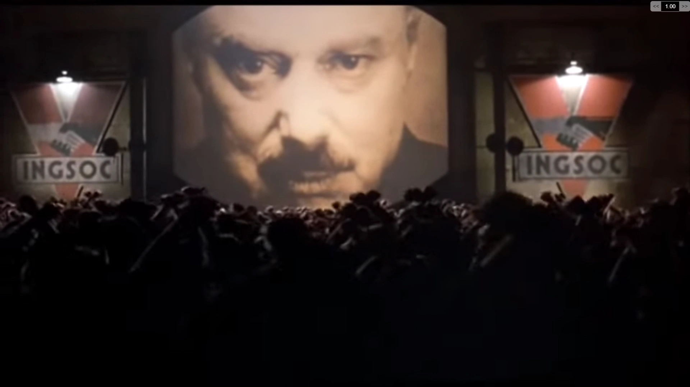

Age of Cockest 5
"Il tempo per i giochi è finito. Ora è il tempo di fare il gioco"
cit. Qualcuno
Lo sviluppo va a rilento ma non è momento di droppare tutto. Ci serve solo una migliore strutturazione
del progetto e compiti specifici per poter progredire.
Ho cercato di realizzare entrambi:
1. Struttura del Progetto
Ho dato (finalmente) struttura alla directory del progetto; si presenta nella seguente
maniera:
.
└── GodotProject
├── .godot
├── gamegraphic
│ ├── characters
│ │ ├── models
│ │ └── script
│ ├── map
│ │ ├── models
│ │ └── script
│ └── UI
│ ├── examples
│ ├── ideas
│ └── script
├── menu
│ ├── img
│ └── script
├── network
│ └── TBD
├── .gitattributes
├── .gitignore
├── icon.svg
├── icon.svg.import
├── node_2d.tscn
├── project.godot
└── README.md
in particolare abbiamo che:
- gamegraphic è la cartella che riguarda la scena di gioco, che include:
- i personaggi (characters), coi loro modelli e animazioni (models) e script che li riguarda,
- la mappa, con modelli 3D e script che manipolano il terreno di gioco e l'ambiente
- UI, ossia i bottoni che governano tutta l'interfaccia di gioco, tramite la quale il giocatore può
controllare il proprio impero, risorse e diplomazia. Gli examples sono le immagini d'esempio dal quale
prendere ispirazione per la realizzazione del vero e proprio ui. Ideas è la cartella di immagini
di abbozzi di UI del gioco. Script è la cartella degli script
- menu è la cartella che riguarda il menù di gioco, ossia le immagini e gli script che controllano i
comportamenti dei bottoni
- network è la cartella in cui successivamente caricare tutta la gestione client del server (To Be Defined)
2. Compiti Assegnati
Ho deciso di suddividere i compiti (in ordine di priorità) seguendo la struttura della
directory che ho costruito:
- Game Graphic:
-
- Fornire Mesh mappa 3D
- Impostare telecamera, angolazione mappa e illuminazione
- Fornire modelli 3D (in assenza di un vero e proprio character system, possiamo pure usarne a piacere,
saranno solo a scopo di progettazione)
- Elaborare sistema movimento personaggio da un punto ad un altro
- Studiare principi di Design della UI di videogiochi
- Trovare idee per Design della UI, cercando da internet foto di altri giochi. Abbozzare poi, usando
magari software online, il design della UI (possibilmente chi segue il il precedente dovrebbe seguire
pure questo punto)
- Mettere texture e/o materiali alla mappa
- Fornire animazioni dei Modelli
- Menu:
-
- Dare Struttura all'albero delle scene dei menu
- Sviluppare scena menu principale
- Sviluppare scena menu scelta gioco (single/multiplayer)
- Sviluppare scena menu impostazioni
- implementare bottoni e navigazione tra menù
- Sviluppare man mano le altre scene o anche solo abbozzarle
Considerazioni Finali
I compiti che ho elencato NON SONO QUELLI DEFINITIVI; man mano che procediamo con lo sviluppo avremo
una visione più specifica e meno generale del progetto, così da poter dare compiti sempre più
mirati e meno generici. La "developing curve" per ora è ripida, dovremo fare sacrifici; è quando
scaleremo le prime vette che potremo apprezzare la strada percorsa, ma fino ad allora
ROMPETEVI
IL
CULO
SENZA
SOSTA

TRUST THE PROCESS
grazie per l'attenzione e buon lavoro.